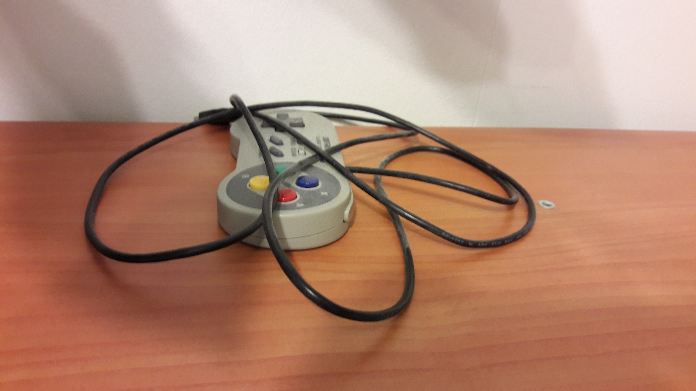
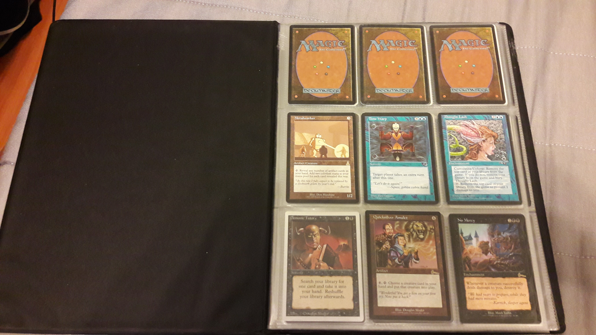
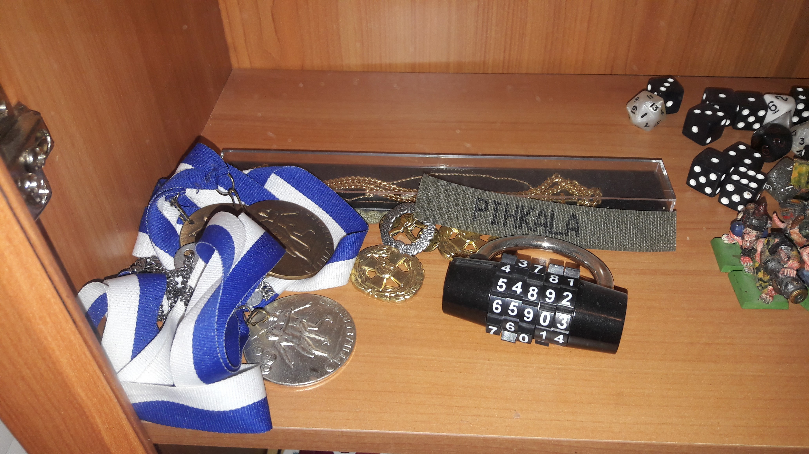
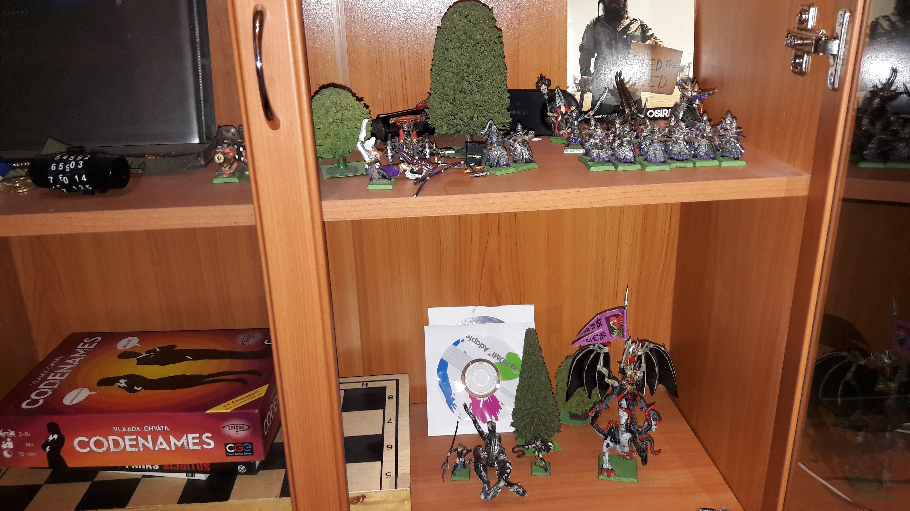
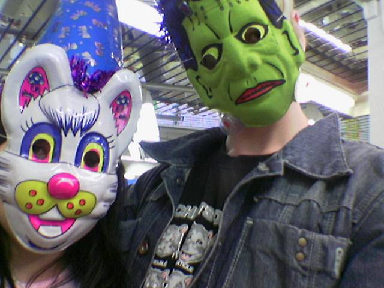
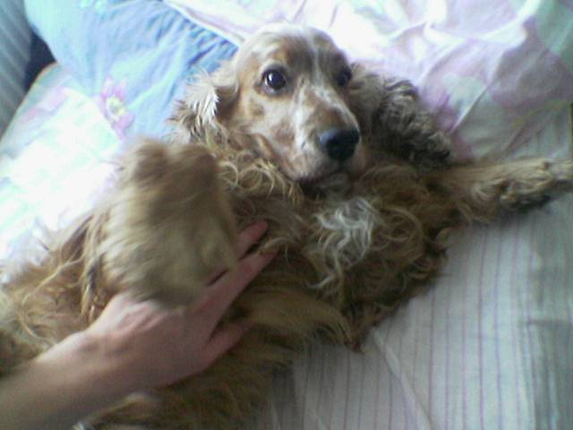
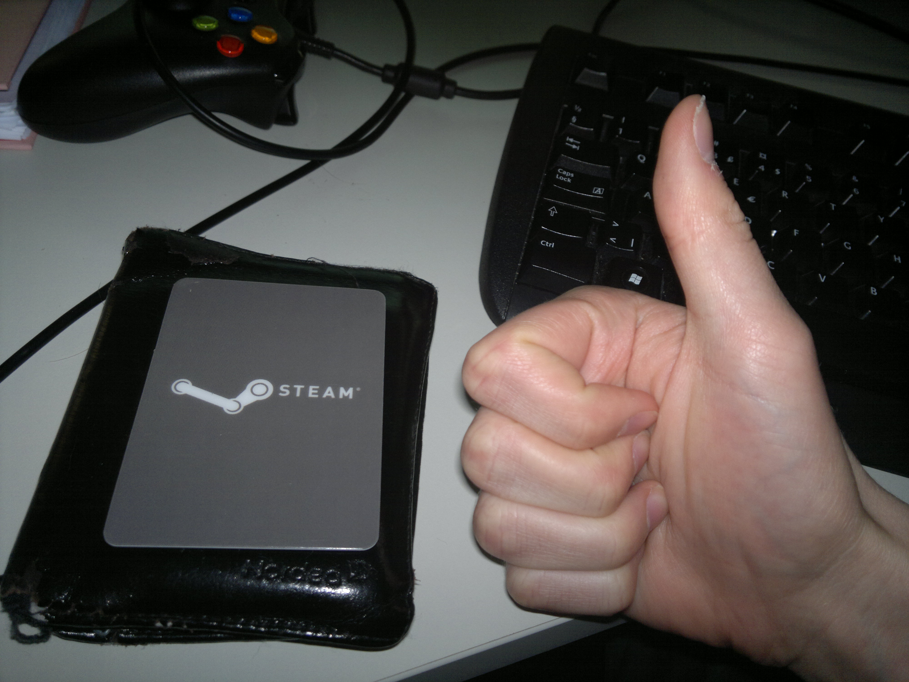
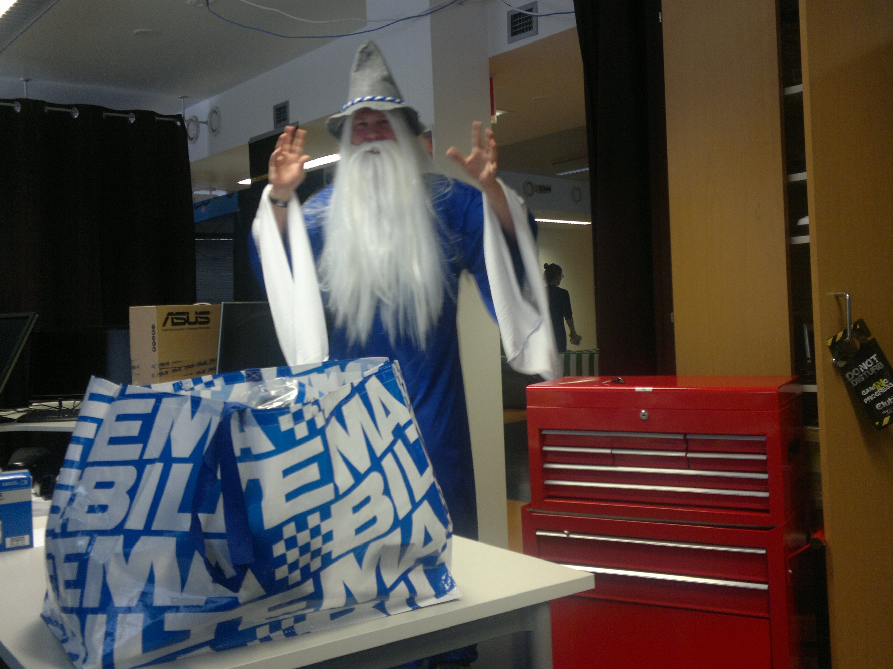
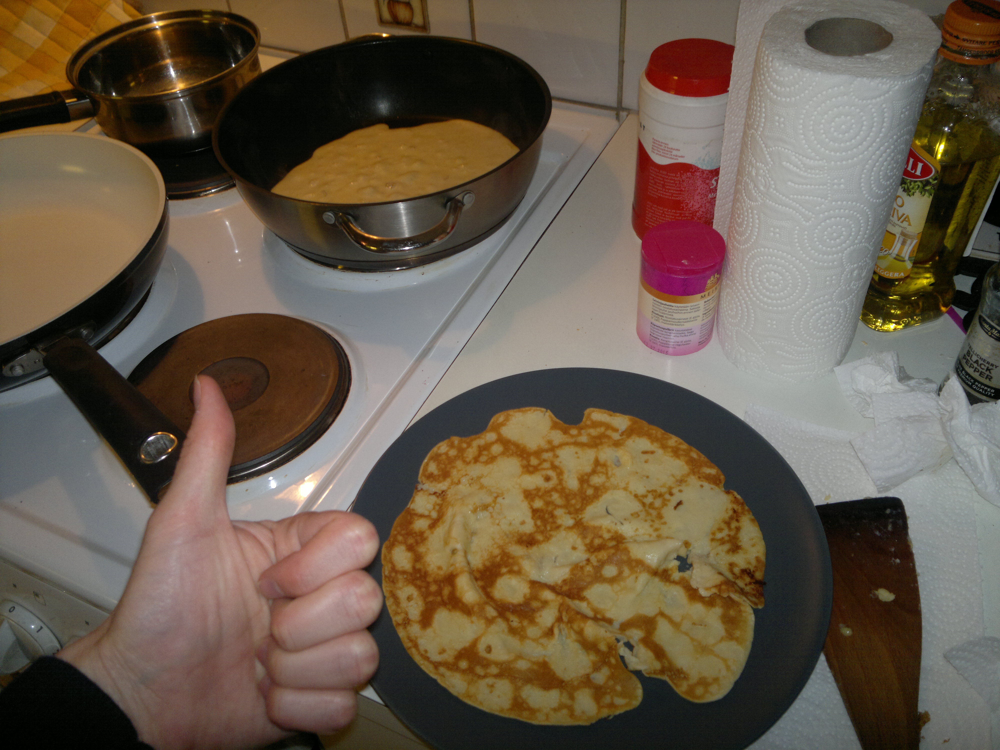
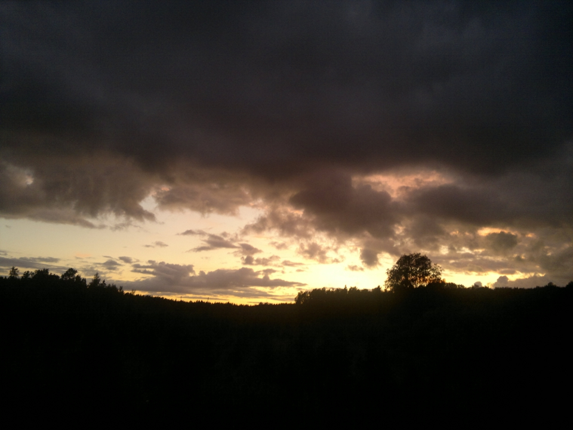

Etusivu
sisällysluettelo
Kuka minä olen?
Hei Moi, olet tullut Miika Pihkalan kotisivuille. Voit myös halutessasi katsoa löydätkö mitään jännää nimelläni täältä: google.
Kiinnostuksen kohteitani
Suurimpia kiinnostuksen kohteitani ovat pelit. Nykyisin erityisesti pelisuunnittelu. Ehkä itselleni kaikkein rakkain ja tärkein peli, jos yksi pitää nostaa ylitse muiden on shakki. Muita historiallisesti tärkeitä pelejä ovat: Hearthstone, Diablo II, Civilization IV, Trine-pelisarja, Baldur's gate-pelisarja, FTL: Faster Than Light, TBOI: The Binding of Isaac, Fallout-pelisarja, Portal 2, Witcher 3, The Elder Scrolls V:Skyrim, Legend of Grimrock, Super Meat Boy, Rogue Legacy, The Banner Saga ja onhan noita..
Kautta historian ja aikojen ihmiset ovat käyttäneet vapaa-aikansa pelien ja erilaisen muun viihteen parissa. Miksi? Ainakin yksi keskeinen syy sille on se, että se ravitsee meitä uudesta kulmasta, samalla edistäen ajatteluamme tai luovuuttamme. Samasta syystä, miksi osa ihmisistä haluaa matkustella ja tavata paljon uusia ihmisiä. Tiedostimmepa sen tai emme, niin aivomme tykkäävät tietyistä asioista. Ne tykkäävät niistä siksi, että ne huomaavat käytännöllisen hyödyn, vaikket itse sitä näkisi.
On myös suuri hyöty pitää kiinni omasta onnellisuudestaan ja viihteen suuri kuluttaminen sen kaikissa muodoissaan on yksi tapa edistää onnellisuuttaan.
BB-talon idioottimaisten kaljankittaajien katsominen saattaa olla aidosti huonoa ja epäkehittävää, mutta myös se voi altistaa meitä näkemään jotain, mitä emme ole ennen nähneet ja aivomme palkitsevat meidät siitä mielihyvähormonein, kunnes kenties tunnin, kahden tunnin tai joissain tapauksissa viiden tuotantokauden jälkeen, se ei enää tarjoa riittävästi mielenkiintoista katsottavaa meille.
Peleillä on kaikista viihteen muodoista parhaat mahdollisuudet tulevaisuudessa ravita mieltämme. Pelit ovat korkeinta teknologiaa ja multimediaa ja voivat pitää sisällään kaiken, mitä elokuvat tai kirjat voivat. Pelit voivat pitää sisällään kaiken, mitä musiikki voi tarjota meille. Pelien interaktiivisuus tarjoaa suurimmat mahdolliset mahdollisuudet sille, että tulevaisuudessa oppiminen ja kaikenlainen osaamisen kehittäminen voi olla mielekkäämpää. Mutta pelit tarjoavat vastauksen erityisesti siihen, että miten voimme kasvaa luovuudessa ja ajattelussa viihteen kautta kaikkia muita nykyviihteitä paremmin.
Niin ja muina mielenkiinnon kohteinani ovat lähimpien ihmisten ja pelien lisäksi muu viihde (elokuvat, tv-sarjat, kulinaariset nautinnot, estetiikka, kirjat, musiikki), uusi teknologia laaja-alaisesti, psykologia, filosofia, yhteiskuntarakenteet systeemeinä, terveys sekä kirjoittaminen (ei keskustelupalstoilla).
"CV"
Alla olevassa linkissä otteita Trine 3:seen tekemääni level designia ja kirja levelin osalta myös level art sommittelua. Näiden lisäksi tein rutkasti
polishaustyötä pääasiassa gameplay näkökulmasta joka leveliin pelissä (eri leveleihin vaihtelevia määriä):
https://www.dropbox.com/s/zu8pe2c9jbgyscc/t3leveldesign.mp4?dl=0
Olin myös Trine 2 teon aikoihin QA töissä ja Trine 2:sesta jäänyt polishattu fiilis oli osittain sen työn ansiota. Olin myös mukana menossa Splot mobiilipelin käyttäjätestauksessa. Tein hommia myös Trine 3:sen suunnitteludokumenttien saralla sekä ainakin toistaiseksi julkaisemattoman pelin konseptisuunnittelussa.
Historian havinaa kuvina

       
© Miika Pihkala 77227N